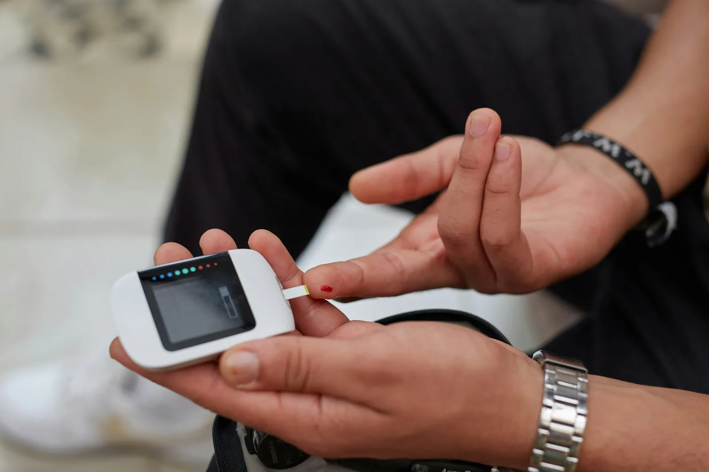

Heart and chronic care
Managing diabetes day to day
Targets, a simple plate method, what to do about a low and the yearly checks that protect your eyes, kidneys and feet.

India has more than 100 million people living with diabetes. Good control is not about perfect numbers every day: it is about small, steady habits that keep your blood sugar in range most of the time and protect your body from long-term damage.
Know your targets
| Test | Usual target |
|---|---|
| HbA1c (3-month average) | Below 7% |
| Fasting or before meals | 80 to 130 mg/dL |
| Two hours after a meal | Below 180 mg/dL |
| Blood pressure | Below 130/80 mmHg |
Your doctor may set gentler targets if you are older, live alone or have frequent lows. Always follow your personal plan.
The plate method for Indian meals
You do not need special food. Use a standard 9-inch plate. Fill half with non-starchy vegetables such as palak, bhindi, beans, cabbage or salad. Fill one quarter with protein: dal, chana, rajma, paneer, curd, eggs, fish or chicken. Fill the last quarter with whole grains such as two small phulkas, brown rice or millets. Eat the vegetables and protein first; it softens the sugar rise from the grains.
Recognise and treat a low
A blood sugar below 70 mg/dL is a low (hypoglycaemia). Signs include shaking, sweating, a fast heartbeat, hunger, confusion or irritability. Use the rule of 15:
- Take 15 g of fast sugar: three teaspoons of sugar in water, or half a glass of fruit juice.
- Wait 15 minutes and check again.
- If still below 70, repeat. Once above 70, eat a small snack such as a biscuit or a banana.
Tell your doctor about any low. Some tablets and insulin doses may need adjusting.
Move a little after every meal
A ten-minute walk after lunch and dinner lowers post-meal sugar noticeably. Over a week, build up to 150 minutes of activity plus two strength sessions with bands or body weight. Check your feet after exercise.
The yearly checks that protect you
- Eyes: a dilated retina check every year to catch diabetic retinopathy early.
- Kidneys: a urine albumin (ACR) test and blood creatinine every year.
- Feet: a foot exam with a sensation test each year, and a daily look at home for cuts or blisters.
- Heart: cholesterol, blood pressure and an ECG as advised.
- Teeth: a dental check every six months, as gum disease is more common with diabetes.
This article is general information and does not replace advice from your own doctor.